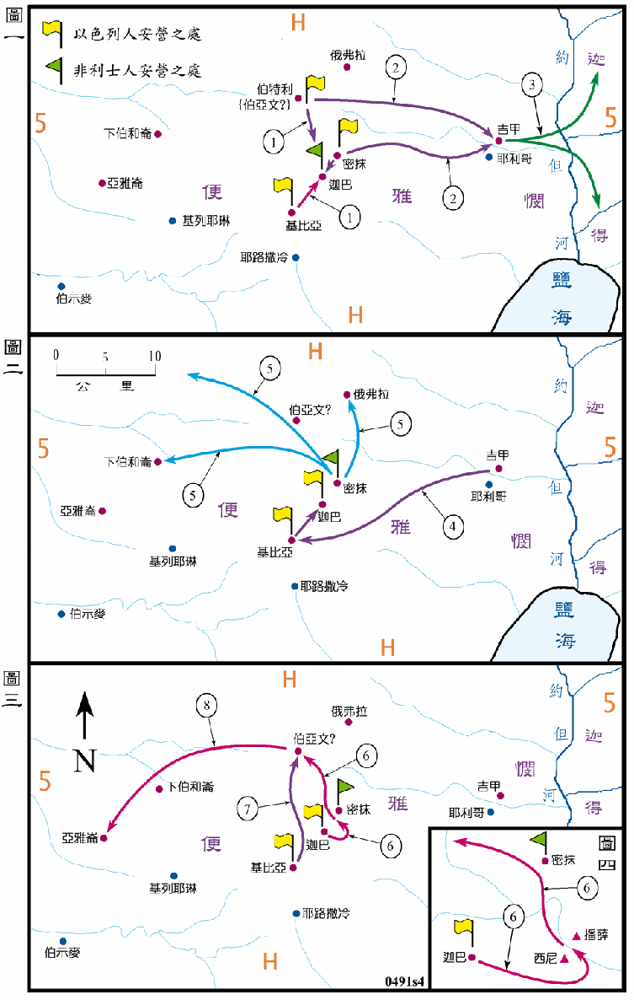

1049BC

行动线说明
本图分为四个分图，各分图的内容如下：
图（一）
| 序号 | 圣经 | 说明 |
|---|---|---|
| 撒上13:1-2 | 扫罗登基的第二年，他领了二千人驻守在密抹和伯特利山，他的儿子约拿单带领一千人驻守基比亚。 | |
| 1 | 撒上13:3-4 | 约拿单攻击迦巴非利士人的防营，扫罗也召集人去攻打。 |
| 2 | 撒上13:4 | 约拿单攻取了迦巴，但扫罗却战败，从伯特利山和密抹退守到吉甲。 |
| 3 | 撒上13:5-7 | 非利士人又增加兵力到密抹，很多以色列人都逃过约但河，到迦得和基列去躲避，扫罗原有的二千人只馀下六百人。 |
| 撒上13:8-14 | 扫罗在吉甲未等候撒母耳来，未遵耶和华的命令，就自行献祭。 |
图（二）
| 序号 | 圣经 | 说明 |
|---|---|---|
| 4 | 撒上13:15-16 | 扫罗从吉甲回到基比亚，又去和约拿单在迦巴安营。 |
| 5 | 撒上13:17-18 | 非利士人在密抹安营，又派了三队掠兵出去。 |
图（三及四）
| 序号 | 圣经 | 说明 |
|---|---|---|
| 6 | 撒上14:1-14 | 约拿单突击非利士人在密抹的防营，他爬上隘口后杀了二十馀人，非利士人大为战兢而溃败。 |
| 7 | 撒上14:18 | 扫罗见非利士溃败，就与藏在以法莲山地的以色列人出来，一同追杀非利士人，一直追到伯亚文。 |
| 8 | 撒上14:31 | 又追杀到亚雅仑，然后非利士人就回本地去了。 |
扫罗登基的第二年，非利士就大举来袭，甚至入侵到了距他的首都基比亚不到5公里的迦巴，而且把扫罗和约拿单的军队切成两段，可说是危急非常，这一次战役全靠神的保守和约拿单的勇敢，约拿单首先收复迦巴，再冒险攻打密抹，神使地都震动，非利士人战兢得用刀互相击杀而溃败。